Xenium breast cancer dataset
Lambda Moses
2023-02-08
Source:vignettes/vig5_xenium.Rmd
vig5_xenium.RmdIntroduction
Xenium is a new technology from 10X genomics for single cell resolution smFISH based spatial transcriptomics. The first Xenium dataset is for formalin fixed paraffin embedded (FFPE) human breast tumor, reported in (Janesick et al. 2022) and downloaded from the 10X website.
The gene count matrix was downloaded as an HDF5 file and read into R
as a SingleCellExperiment (SCE) object with
DropletUtils::read10xCounts(). The gene count matrix is
originally a DelayedArray, so the data is not all loaded
into memory. For now, the matrix has been converted into an in memory
dgCMatrix. However, for the next release, we would like to
write another vignette on on disk analyses. The challenge is
representing sf data frames on disk, perhaps with sedona
and SQLDataFrame.
The cell metadata (including centroid coordinates) and cell
segmentation polygons were downloaded as parquet files, a
more compact way to store columnar data than CSV, and read into R as
data frames with arrow::read_parquet(). The cell polygons
were converted into sf data frame with
SpatialFeatureExperiment::df2sf(). Then the SCE object was
converted into SpatialFeatureExperiment (SFE) and the
polygon geometry was added to the SFE object, which is in the
SFEData package.
Here we load the packages used in this vignette.
library(Voyager)
library(SFEData) # Pushed fix to Bioc but changes may take a while to show up
library(SingleCellExperiment)
#> Loading required package: SummarizedExperiment
#> Loading required package: MatrixGenerics
#> Loading required package: matrixStats
#>
#> Attaching package: 'MatrixGenerics'
#> The following objects are masked from 'package:matrixStats':
#>
#> colAlls, colAnyNAs, colAnys, colAvgsPerRowSet, colCollapse,
#> colCounts, colCummaxs, colCummins, colCumprods, colCumsums,
#> colDiffs, colIQRDiffs, colIQRs, colLogSumExps, colMadDiffs,
#> colMads, colMaxs, colMeans2, colMedians, colMins, colOrderStats,
#> colProds, colQuantiles, colRanges, colRanks, colSdDiffs, colSds,
#> colSums2, colTabulates, colVarDiffs, colVars, colWeightedMads,
#> colWeightedMeans, colWeightedMedians, colWeightedSds,
#> colWeightedVars, rowAlls, rowAnyNAs, rowAnys, rowAvgsPerColSet,
#> rowCollapse, rowCounts, rowCummaxs, rowCummins, rowCumprods,
#> rowCumsums, rowDiffs, rowIQRDiffs, rowIQRs, rowLogSumExps,
#> rowMadDiffs, rowMads, rowMaxs, rowMeans2, rowMedians, rowMins,
#> rowOrderStats, rowProds, rowQuantiles, rowRanges, rowRanks,
#> rowSdDiffs, rowSds, rowSums2, rowTabulates, rowVarDiffs, rowVars,
#> rowWeightedMads, rowWeightedMeans, rowWeightedMedians,
#> rowWeightedSds, rowWeightedVars
#> Loading required package: GenomicRanges
#> Loading required package: stats4
#> Loading required package: BiocGenerics
#>
#> Attaching package: 'BiocGenerics'
#> The following objects are masked from 'package:stats':
#>
#> IQR, mad, sd, var, xtabs
#> The following objects are masked from 'package:base':
#>
#> anyDuplicated, aperm, append, as.data.frame, basename, cbind,
#> colnames, dirname, do.call, duplicated, eval, evalq, Filter, Find,
#> get, grep, grepl, intersect, is.unsorted, lapply, Map, mapply,
#> match, mget, order, paste, pmax, pmax.int, pmin, pmin.int,
#> Position, rank, rbind, Reduce, rownames, sapply, setdiff, sort,
#> table, tapply, union, unique, unsplit, which.max, which.min
#> Loading required package: S4Vectors
#>
#> Attaching package: 'S4Vectors'
#> The following objects are masked from 'package:base':
#>
#> expand.grid, I, unname
#> Loading required package: IRanges
#> Loading required package: GenomeInfoDb
#> Loading required package: Biobase
#> Welcome to Bioconductor
#>
#> Vignettes contain introductory material; view with
#> 'browseVignettes()'. To cite Bioconductor, see
#> 'citation("Biobase")', and for packages 'citation("pkgname")'.
#>
#> Attaching package: 'Biobase'
#> The following object is masked from 'package:MatrixGenerics':
#>
#> rowMedians
#> The following objects are masked from 'package:matrixStats':
#>
#> anyMissing, rowMedians
library(SpatialExperiment)
library(SpatialFeatureExperiment)
library(ggplot2)
library(stringr)
library(scater) # devel version of plotExpression
#> Loading required package: scuttle
library(scuttle)
library(BiocParallel)
library(BiocSingular)
library(bluster)
library(scran)
library(patchwork)
theme_set(theme_void())
# Fixed version this function may not immediately show up on Bioconductor
# Use remotes::install_github("pachterlab/SFEData") if Bioc version doesn't work
(sfe <- JanesickBreastData(dataset = "rep2"))
#> adding rname 'https://caltech.box.com/public/static/y9f16wiaz70ojvteavctcu3k9zs6ctfl'
#> class: SpatialFeatureExperiment
#> dim: 541 118708
#> metadata(1): Samples
#> assays(1): counts
#> rownames(541): ABCC11 ACTA2 ... BLANK_0497 BLANK_0499
#> rowData names(6): ID Symbol ... vars cv2
#> colnames: NULL
#> colData names(10): Sample Barcode ... nCounts nGenes
#> reducedDimNames(0):
#> mainExpName: NULL
#> altExpNames(0):
#> spatialCoords names(2) : x_centroid y_centroid
#> imgData names(1): sample_id
#>
#> Geometries:
#> colGeometries: centroids (POINT), cellSeg (POLYGON), nucSeg (GEOMETRY)
#>
#> Graphs:
#> sample01:There are 118708 cells in this dataset, a little more than in the CosMX dataset.
The SFE object doesn’t have column names (i.e. cell IDs). Here we assign cell IDs.
This is what the tissue, with the cell outlines, looks like
ggplot(cellSeg(sfe)) + geom_sf() +
theme_bw() +
scale_x_continuous(expand = expansion()) +
scale_y_continuous(expand = expansion())
Plot cell density in space
plotCellBin2D(sfe) + theme_bw()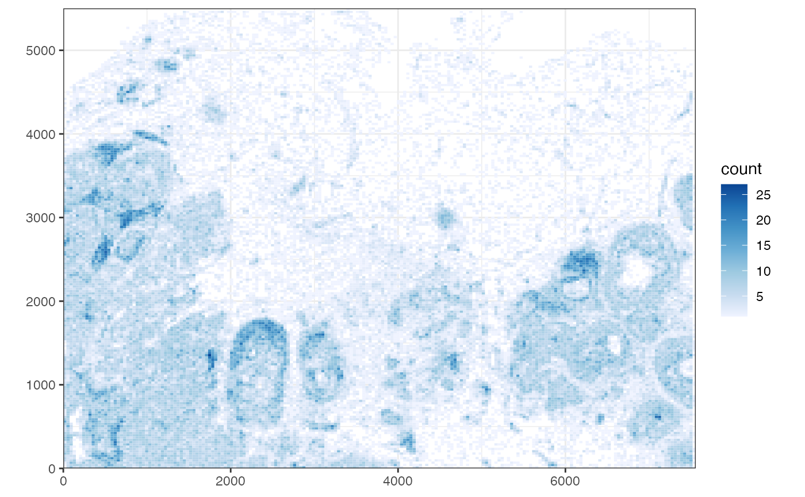
Quality control
Cells
Some QC metrics are precomputed and are stored in
colData
names(colData(sfe))
#> [1] "Sample" "Barcode"
#> [3] "transcript_counts" "control_probe_counts"
#> [5] "control_codeword_counts" "cell_area"
#> [7] "nucleus_area" "sample_id"
#> [9] "nCounts" "nGenes"Since there’re more cells, it would be better to plot the tissue larger, so we’ll plot the histogram of QC metrics and the spatial plots separately, unlike in the CosMx vignette.
n_panel <- 313
colData(sfe)$nCounts_normed <- sfe$nCounts/n_panel
colData(sfe)$nGenes_normed <- sfe$nGenes/n_panelHere we divided nCounts by the total number of genes probed, so this histogram is comparable to those from other smFISH-based datasets.
plotColDataHistogram(sfe, c("nCounts_normed", "nGenes_normed")) + theme_bw()
Compared to the FFPE CosMX non-small cell lung cancer dataset, more transcripts per gene on average and a larger proportion of all genes are detected in this dataset, which is also FFPE. However, this should be interpreted with care, since these two datasets are from different tissues and have different gene panels, so this may or may not indicate that Xenium has better detection efficiency than CosMX.
plotSpatialFeature(sfe, "nCounts", colGeometryName = "cellSeg")There seem to be FOV artifacts. However, the cell ID and FOV information were unavailable so we cannot examine them.
plotSpatialFeature(sfe, "nGenes", colGeometryName = "cellSeg")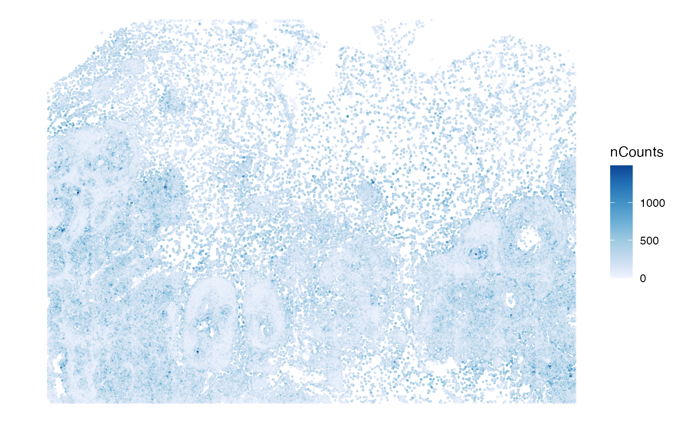
A standard examination is to look at the relationship between nCounts and nGenes:
plotColDataBin2D(sfe, "nCounts", "nGenes") + theme_bw()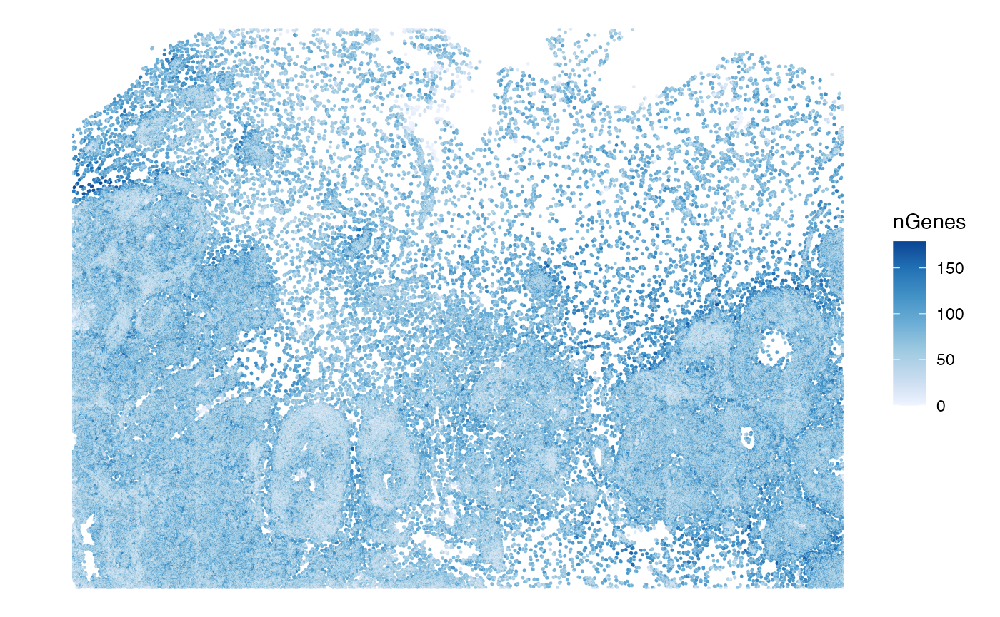
There appear to be two branches.
Here we plot the distribution of cell area
plotColDataHistogram(sfe, c("cell_area", "nucleus_area"), scales = "free_y") +
theme_bw()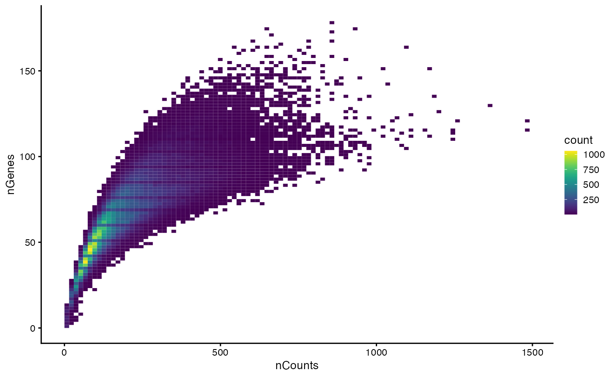
That should be in pixels. There’s a very long tail. The nuclei are much smaller than the cells.
How is cell area distributed in space?
plotSpatialFeature(sfe, "cell_area", colGeometryName = "cellSeg")Cells in the sparse region tend to be larger than those in the dense region. This may be biological or an artifact of the cell segmentation algorithm or both.
Here the nuclei segmentations are plotted instead of cell segmentation. The nuclei are much smaller to the extent that they are difficult to see.
plotSpatialFeature(sfe, "nucleus_area", colGeometryName = "nucSeg")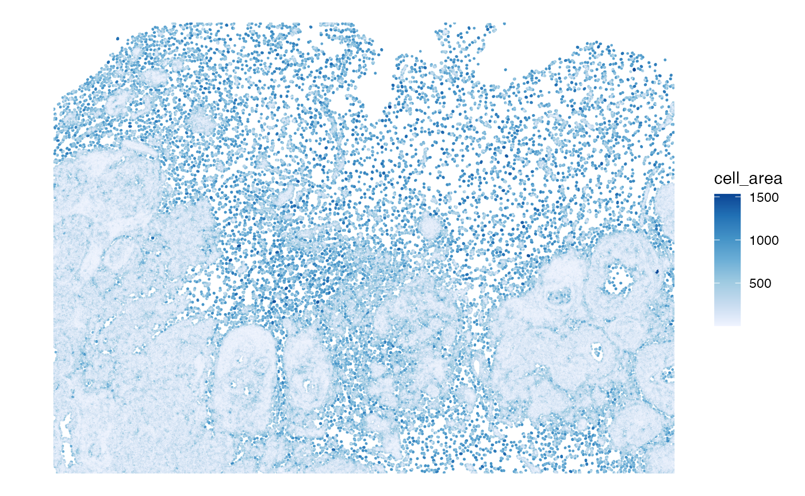
There’s an outlier near the right edge of the section, throwing off the dynamic range of the plot. Upon inspection of the H&E image, the outlier is a bit of tissue debris that doesn’t look like a cell. But we can still that cells in the dense, gland like regions tend to have larger nuclei. This may be biological, or that nuclei are so densely packed in those regions that they are more likely to be undersegmented, i.e. when multiple nuclei are counted as one by the nuclei segmentation program, or both.
These observations motivate an examination of the relationship between cell area and nuclei area:
plotColDataBin2D(sfe, "cell_area", "nucleus_area") + theme_bw() +
scale_fill_viridis_c()
#> Scale for fill is already present.
#> Adding another scale for fill, which will replace the existing scale.
Again, there are two branches, probably related to cell density and cell type. The nucleus outlier also has large cell area, though it is not as much an outlier in cell area. However, it is a spatial outlier as it’s unusually large compared to its neighbors (scroll up two plots back).
Next we calculate the proportion of cell in this z-plane taken up by the nucleus, and examine the distribution:
colData(sfe)$prop_nuc <- sfe$nucleus_area / sfe$cell_area
plotColDataHistogram(sfe, "prop_nuc") + theme_bw()
This distribution could have been generated from two peaks that were combined. From the histogram, there do not seem to be cells without nuclei or segmentation artifacts where the nucleus is larger than the cell. However, there are so many cells in this dataset and it is possible that just a few cells would not be visible on this histogram. We double check:
# No nucleus
sum(sfe$nucleus_area < 1)
#> [1] 0
# Nucleus larger than cell
sum(sfe$nucleus_area > sfe$cell_area)
#> [1] 0So there are no cells without nuclei or nuclei larger than their cells. Here we plot the nuclei proportion in space:
plotSpatialFeature(sfe, "prop_nuc", colGeometryName = "cellSeg")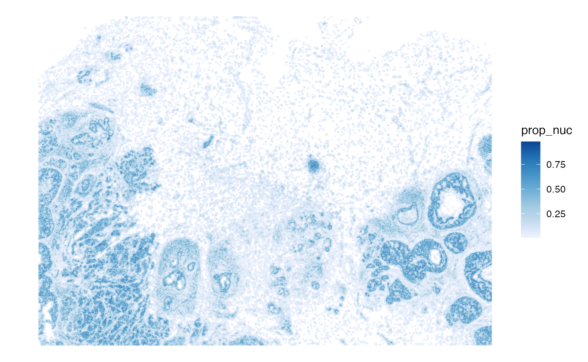
Cells in some histological regions have larger proportions occupied by the nuclei. It is interesting to check, controlling for cell type, how cell area, nucleus area, and the proportion of cell occupied by nucleus relate to gene expression. However, a problem in performing such an analysis is that cell segmentation is only available for one z-plane here and these areas also relate to where this z-plane intersects each cell.
Below we plot a 2D histogram to better show the density of points on this plot:
plotColDataBin2D(sfe, "cell_area", "prop_nuc") + theme_bw() +
scale_fill_viridis_c()
#> Scale for fill is already present.
#> Adding another scale for fill, which will replace the existing scale.Smaller cells tend to have higher proportion occupied by the nucleus. This can be related to cell type, or it could be a limitation in how small the nuclei can be in this tissue.
We also examine the relationship between nucleus area and the proportion of cell occupied by the nucleus:
plotColDataBin2D(sfe, "nucleus_area", "prop_nuc") + theme_bw() +
scale_fill_viridis_c()
#> Scale for fill is already present.
#> Adding another scale for fill, which will replace the existing scale.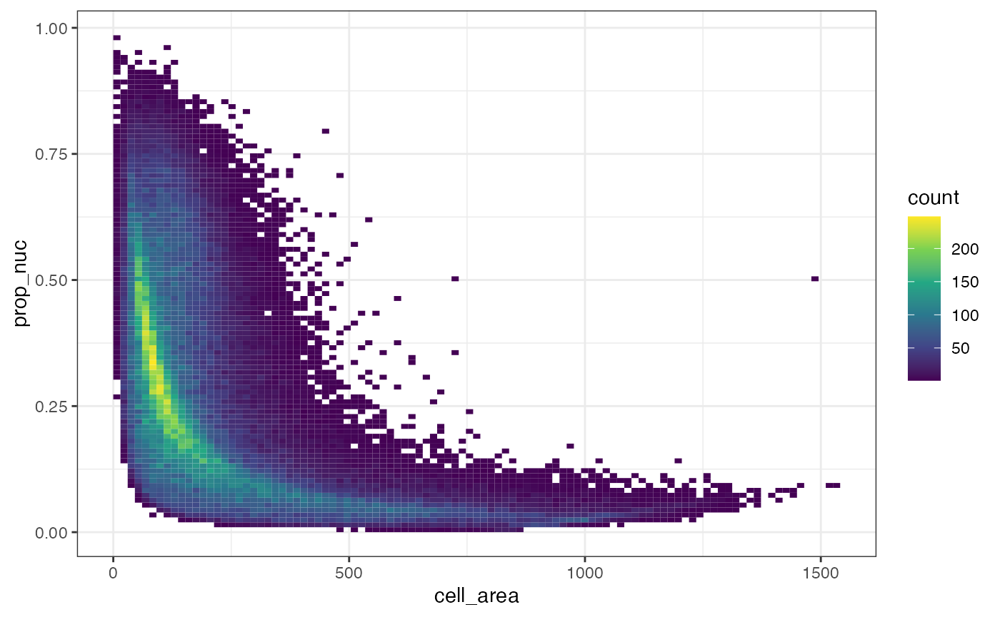
The outlier is obvious. There are more cells with both small nuclei and low proportion of area occupied by the nucleus.
Negative controls
Since there are only a few hundred genes plus negative control probes, all row names of the SFE object can be printed out to find what the negative control probes are called.
rownames(sfe)
#> [1] "ABCC11" "ACTA2"
#> [3] "ACTG2" "ADAM9"
#> [5] "ADGRE5" "ADH1B"
#> [7] "ADIPOQ" "AGR3"
#> [9] "AHSP" "AIF1"
#> [11] "AKR1C1" "AKR1C3"
#> [13] "ALDH1A3" "ANGPT2"
#> [15] "ANKRD28" "ANKRD29"
#> [17] "ANKRD30A" "APOBEC3A"
#> [19] "APOBEC3B" "APOC1"
#> [21] "AQP1" "AQP3"
#> [23] "AR" "AVPR1A"
#> [25] "BACE2" "BANK1"
#> [27] "BASP1" "BTNL9"
#> [29] "C15orf48" "C1QA"
#> [31] "C1QC" "C2orf42"
#> [33] "C5orf46" "C6orf132"
#> [35] "CAV1" "CAVIN2"
#> [37] "CCDC6" "CCDC80"
#> [39] "CCL20" "CCL5"
#> [41] "CCL8" "CCND1"
#> [43] "CCPG1" "CCR7"
#> [45] "CD14" "CD163"
#> [47] "CD19" "CD1C"
#> [49] "CD247" "CD27"
#> [51] "CD274" "CD3D"
#> [53] "CD3E" "CD3G"
#> [55] "CD4" "CD68"
#> [57] "CD69" "CD79A"
#> [59] "CD79B" "CD80"
#> [61] "CD83" "CD86"
#> [63] "CD8A" "CD8B"
#> [65] "CD9" "CD93"
#> [67] "CDC42EP1" "CDH1"
#> [69] "CEACAM6" "CEACAM8"
#> [71] "CENPF" "CLCA2"
#> [73] "CLDN4" "CLDN5"
#> [75] "CLEC14A" "CLEC9A"
#> [77] "CLECL1" "CLIC6"
#> [79] "CPA3" "CRHBP"
#> [81] "CRISPLD2" "CSF3"
#> [83] "CTH" "CTLA4"
#> [85] "CTSG" "CTTN"
#> [87] "CX3CR1" "CXCL12"
#> [89] "CXCL16" "CXCL5"
#> [91] "CXCR4" "CYP1A1"
#> [93] "CYTIP" "DAPK3"
#> [95] "DERL3" "DMKN"
#> [97] "DNAAF1" "DNTTIP1"
#> [99] "DPT" "DSC2"
#> [101] "DSP" "DST"
#> [103] "DUSP2" "DUSP5"
#> [105] "EDN1" "EDNRB"
#> [107] "EGFL7" "EGFR"
#> [109] "EIF4EBP1" "ELF3"
#> [111] "ELF5" "ENAH"
#> [113] "EPCAM" "ERBB2"
#> [115] "ERN1" "ESM1"
#> [117] "ESR1" "FAM107B"
#> [119] "FAM49A" "FASN"
#> [121] "FBLIM1" "FBLN1"
#> [123] "FCER1A" "FCER1G"
#> [125] "FCGR3A" "FGL2"
#> [127] "FLNB" "FOXA1"
#> [129] "FOXC2" "FOXP3"
#> [131] "FSTL3" "GATA3"
#> [133] "GJB2" "GLIPR1"
#> [135] "GNLY" "GPR183"
#> [137] "GZMA" "GZMB"
#> [139] "GZMK" "HAVCR2"
#> [141] "HDC" "HMGA1"
#> [143] "HOOK2" "HOXD8"
#> [145] "HOXD9" "HPX"
#> [147] "IGF1" "IGSF6"
#> [149] "IL2RA" "IL2RG"
#> [151] "IL3RA" "IL7R"
#> [153] "ITGAM" "ITGAX"
#> [155] "ITM2C" "JUP"
#> [157] "KARS" "KDR"
#> [159] "KIT" "KLF5"
#> [161] "KLRB1" "KLRC1"
#> [163] "KLRD1" "KLRF1"
#> [165] "KRT14" "KRT15"
#> [167] "KRT16" "KRT23"
#> [169] "KRT5" "KRT6B"
#> [171] "KRT7" "KRT8"
#> [173] "LAG3" "LARS"
#> [175] "LDHB" "LEP"
#> [177] "LGALSL" "LIF"
#> [179] "LILRA4" "LPL"
#> [181] "LPXN" "LRRC15"
#> [183] "LTB" "LUM"
#> [185] "LY86" "LYPD3"
#> [187] "LYZ" "MAP3K8"
#> [189] "MDM2" "MEDAG"
#> [191] "MKI67" "MLPH"
#> [193] "MMP1" "MMP12"
#> [195] "MMP2" "MMRN2"
#> [197] "MNDA" "MPO"
#> [199] "MRC1" "MS4A1"
#> [201] "MUC6" "MYBPC1"
#> [203] "MYH11" "MYLK"
#> [205] "MYO5B" "MZB1"
#> [207] "NARS" "NCAM1"
#> [209] "NDUFA4L2" "NKG7"
#> [211] "NOSTRIN" "NPM3"
#> [213] "OCIAD2" "OPRPN"
#> [215] "OXTR" "PCLAF"
#> [217] "PCOLCE" "PDCD1"
#> [219] "PDCD1LG2" "PDE4A"
#> [221] "PDGFRA" "PDGFRB"
#> [223] "PDK4" "PECAM1"
#> [225] "PELI1" "PGR"
#> [227] "PIGR" "PIM1"
#> [229] "PLD4" "POLR2J3"
#> [231] "POSTN" "PPARG"
#> [233] "PRDM1" "PRF1"
#> [235] "PTGDS" "PTN"
#> [237] "PTPRC" "PTRHD1"
#> [239] "QARS" "RAB30"
#> [241] "RAMP2" "RAPGEF3"
#> [243] "REXO4" "RHOH"
#> [245] "RORC" "RTKN2"
#> [247] "RUNX1" "S100A14"
#> [249] "S100A4" "S100A8"
#> [251] "SCD" "SCGB2A1"
#> [253] "SDC4" "SEC11C"
#> [255] "SEC24A" "SELL"
#> [257] "SERHL2" "SERPINA3"
#> [259] "SERPINB9" "SFRP1"
#> [261] "SFRP4" "SH3YL1"
#> [263] "SLAMF1" "SLAMF7"
#> [265] "SLC25A37" "SLC4A1"
#> [267] "SLC5A6" "SMAP2"
#> [269] "SMS" "SNAI1"
#> [271] "SOX17" "SOX18"
#> [273] "SPIB" "SQLE"
#> [275] "SRPK1" "SSTR2"
#> [277] "STC1" "SVIL"
#> [279] "TAC1" "TACSTD2"
#> [281] "TCEAL7" "TCF15"
#> [283] "TCF4" "TCF7"
#> [285] "TCIM" "TCL1A"
#> [287] "TENT5C" "TFAP2A"
#> [289] "THAP2" "TIFA"
#> [291] "TIGIT" "TIMP4"
#> [293] "TMEM147" "TNFRSF17"
#> [295] "TOMM7" "TOP2A"
#> [297] "TPD52" "TPSAB1"
#> [299] "TRAC" "TRAF4"
#> [301] "TRAPPC3" "TRIB1"
#> [303] "TUBA4A" "TUBB2B"
#> [305] "TYROBP" "UCP1"
#> [307] "USP53" "VOPP1"
#> [309] "VWF" "WARS"
#> [311] "ZEB1" "ZEB2"
#> [313] "ZNF562" "NegControlProbe_00042"
#> [315] "NegControlProbe_00041" "NegControlProbe_00039"
#> [317] "NegControlProbe_00035" "NegControlProbe_00034"
#> [319] "NegControlProbe_00033" "NegControlProbe_00031"
#> [321] "NegControlProbe_00025" "NegControlProbe_00024"
#> [323] "NegControlProbe_00022" "NegControlProbe_00019"
#> [325] "NegControlProbe_00017" "NegControlProbe_00016"
#> [327] "NegControlProbe_00014" "NegControlProbe_00013"
#> [329] "NegControlProbe_00012" "NegControlProbe_00009"
#> [331] "NegControlProbe_00004" "NegControlProbe_00003"
#> [333] "NegControlProbe_00002" "antisense_PROKR2"
#> [335] "antisense_ULK3" "antisense_SCRIB"
#> [337] "antisense_TRMU" "antisense_MYLIP"
#> [339] "antisense_LGI3" "antisense_BCL2L15"
#> [341] "antisense_ADCY4" "NegControlCodeword_0500"
#> [343] "NegControlCodeword_0501" "NegControlCodeword_0502"
#> [345] "NegControlCodeword_0503" "NegControlCodeword_0504"
#> [347] "NegControlCodeword_0505" "NegControlCodeword_0506"
#> [349] "NegControlCodeword_0507" "NegControlCodeword_0508"
#> [351] "NegControlCodeword_0509" "NegControlCodeword_0510"
#> [353] "NegControlCodeword_0511" "NegControlCodeword_0512"
#> [355] "NegControlCodeword_0513" "NegControlCodeword_0514"
#> [357] "NegControlCodeword_0515" "NegControlCodeword_0516"
#> [359] "NegControlCodeword_0517" "NegControlCodeword_0518"
#> [361] "NegControlCodeword_0519" "NegControlCodeword_0520"
#> [363] "NegControlCodeword_0521" "NegControlCodeword_0522"
#> [365] "NegControlCodeword_0523" "NegControlCodeword_0524"
#> [367] "NegControlCodeword_0525" "NegControlCodeword_0526"
#> [369] "NegControlCodeword_0527" "NegControlCodeword_0528"
#> [371] "NegControlCodeword_0529" "NegControlCodeword_0530"
#> [373] "NegControlCodeword_0531" "NegControlCodeword_0532"
#> [375] "NegControlCodeword_0533" "NegControlCodeword_0534"
#> [377] "NegControlCodeword_0535" "NegControlCodeword_0536"
#> [379] "NegControlCodeword_0537" "NegControlCodeword_0538"
#> [381] "NegControlCodeword_0539" "NegControlCodeword_0540"
#> [383] "BLANK_0006" "BLANK_0013"
#> [385] "BLANK_0037" "BLANK_0069"
#> [387] "BLANK_0072" "BLANK_0087"
#> [389] "BLANK_0110" "BLANK_0114"
#> [391] "BLANK_0120" "BLANK_0147"
#> [393] "BLANK_0180" "BLANK_0186"
#> [395] "BLANK_0272" "BLANK_0278"
#> [397] "BLANK_0319" "BLANK_0321"
#> [399] "BLANK_0337" "BLANK_0350"
#> [401] "BLANK_0351" "BLANK_0352"
#> [403] "BLANK_0353" "BLANK_0354"
#> [405] "BLANK_0355" "BLANK_0356"
#> [407] "BLANK_0357" "BLANK_0358"
#> [409] "BLANK_0359" "BLANK_0360"
#> [411] "BLANK_0361" "BLANK_0362"
#> [413] "BLANK_0363" "BLANK_0364"
#> [415] "BLANK_0365" "BLANK_0366"
#> [417] "BLANK_0367" "BLANK_0368"
#> [419] "BLANK_0369" "BLANK_0370"
#> [421] "BLANK_0371" "BLANK_0372"
#> [423] "BLANK_0373" "BLANK_0374"
#> [425] "BLANK_0375" "BLANK_0376"
#> [427] "BLANK_0377" "BLANK_0378"
#> [429] "BLANK_0379" "BLANK_0380"
#> [431] "BLANK_0381" "BLANK_0382"
#> [433] "BLANK_0383" "BLANK_0384"
#> [435] "BLANK_0385" "BLANK_0386"
#> [437] "BLANK_0387" "BLANK_0388"
#> [439] "BLANK_0389" "BLANK_0390"
#> [441] "BLANK_0391" "BLANK_0392"
#> [443] "BLANK_0393" "BLANK_0394"
#> [445] "BLANK_0395" "BLANK_0396"
#> [447] "BLANK_0397" "BLANK_0398"
#> [449] "BLANK_0399" "BLANK_0400"
#> [451] "BLANK_0401" "BLANK_0402"
#> [453] "BLANK_0403" "BLANK_0404"
#> [455] "BLANK_0405" "BLANK_0406"
#> [457] "BLANK_0407" "BLANK_0408"
#> [459] "BLANK_0409" "BLANK_0410"
#> [461] "BLANK_0411" "BLANK_0412"
#> [463] "BLANK_0413" "BLANK_0414"
#> [465] "BLANK_0415" "BLANK_0416"
#> [467] "BLANK_0417" "BLANK_0418"
#> [469] "BLANK_0419" "BLANK_0420"
#> [471] "BLANK_0421" "BLANK_0422"
#> [473] "BLANK_0423" "BLANK_0424"
#> [475] "BLANK_0425" "BLANK_0426"
#> [477] "BLANK_0427" "BLANK_0428"
#> [479] "BLANK_0429" "BLANK_0430"
#> [481] "BLANK_0431" "BLANK_0432"
#> [483] "BLANK_0433" "BLANK_0434"
#> [485] "BLANK_0435" "BLANK_0436"
#> [487] "BLANK_0437" "BLANK_0438"
#> [489] "BLANK_0439" "BLANK_0440"
#> [491] "BLANK_0441" "BLANK_0442"
#> [493] "BLANK_0443" "BLANK_0444"
#> [495] "BLANK_0445" "BLANK_0446"
#> [497] "BLANK_0447" "BLANK_0448"
#> [499] "BLANK_0449" "BLANK_0450"
#> [501] "BLANK_0451" "BLANK_0452"
#> [503] "BLANK_0453" "BLANK_0454"
#> [505] "BLANK_0455" "BLANK_0456"
#> [507] "BLANK_0457" "BLANK_0458"
#> [509] "BLANK_0459" "BLANK_0460"
#> [511] "BLANK_0461" "BLANK_0462"
#> [513] "BLANK_0463" "BLANK_0464"
#> [515] "BLANK_0465" "BLANK_0466"
#> [517] "BLANK_0467" "BLANK_0468"
#> [519] "BLANK_0469" "BLANK_0470"
#> [521] "BLANK_0471" "BLANK_0472"
#> [523] "BLANK_0473" "BLANK_0474"
#> [525] "BLANK_0475" "BLANK_0476"
#> [527] "BLANK_0477" "BLANK_0478"
#> [529] "BLANK_0479" "BLANK_0480"
#> [531] "BLANK_0481" "BLANK_0482"
#> [533] "BLANK_0483" "BLANK_0484"
#> [535] "BLANK_0485" "BLANK_0486"
#> [537] "BLANK_0487" "BLANK_0488"
#> [539] "BLANK_0489" "BLANK_0497"
#> [541] "BLANK_0499"According to the Xenium paper (Janesick et al. 2022), there are 3 types of controls:
- probe controls to assess non-specific binding to RNA,
- decoding controls to assess misassigned genes, and
- genomic DNA (gDNA) controls to ensure the signal is from RNA.
The paper does not explain in detail how those control probes were designed, nor explain what the blank probes are. But the blank probes can be used as a negative control.
is_blank <- str_detect(rownames(sfe), "^BLANK_")
sum(is_blank)
#> [1] 159This should be number 1, the probe control
is_neg <- str_detect(rownames(sfe), "^NegControlProbe")
sum(is_neg)
#> [1] 20This should be number 2, the decoding control
is_neg2 <- str_detect(rownames(sfe), "^NegControlCodeword")
sum(is_neg2)
#> [1] 41This must be number 3, gDNA control
is_anti <- str_detect(rownames(sfe), "^antisense")
sum(is_anti)
#> [1] 8Also make an indicator of whether a feature is any sort of negative control
is_any_neg <- is_blank | is_neg | is_neg2 | is_antiThe addPerCellQCMetrics() function in the
scuttle package can conveniently add transcript counts,
proportion of total counts, and number of features detected for any
subset of features to the SCE object. Here we do this for the SFE
object, as SFE inherits from SCE.
sfe <- addPerCellQCMetrics(sfe, subsets = list(blank = is_blank,
negProbe = is_neg,
negCodeword = is_neg2,
anti = is_anti,
any_neg = is_any_neg))
names(colData(sfe))
#> [1] "Sample" "Barcode"
#> [3] "transcript_counts" "control_probe_counts"
#> [5] "control_codeword_counts" "cell_area"
#> [7] "nucleus_area" "sample_id"
#> [9] "nCounts" "nGenes"
#> [11] "nCounts_normed" "nGenes_normed"
#> [13] "prop_nuc" "sum"
#> [15] "detected" "subsets_blank_sum"
#> [17] "subsets_blank_detected" "subsets_blank_percent"
#> [19] "subsets_negProbe_sum" "subsets_negProbe_detected"
#> [21] "subsets_negProbe_percent" "subsets_negCodeword_sum"
#> [23] "subsets_negCodeword_detected" "subsets_negCodeword_percent"
#> [25] "subsets_anti_sum" "subsets_anti_detected"
#> [27] "subsets_anti_percent" "subsets_any_neg_sum"
#> [29] "subsets_any_neg_detected" "subsets_any_neg_percent"
#> [31] "total"Next we plot the proportion of transcript counts coming from any negative control.
cols_use <- names(colData(sfe))[str_detect(names(colData(sfe)), "_percent$")]
plotColDataHistogram(sfe, cols_use, bins = 100, ncol = 3) + theme_bw()
#> Warning: Removed 285 rows containing non-finite values (`stat_bin()`).
The histogram is dominated by the bin at zero and there are some extreme outliers too few to be seen but evident from the scale of the x axis. We also plot the histogram only for cells with at least 1 count from a negative control. The NA’s come from cells that got segmented but have no transcripts detected.
plotColDataHistogram(sfe, cols_use, bins = 100, ncol = 3) +
scale_x_log10() +
annotation_logticks(sides = "b") +
theme_bw()
#> Warning: Transformation introduced infinite values in continuous x-axis
#> Warning: Removed 565577 rows containing non-finite values
#> (`stat_bin()`).
The vast majority of these cells have less than 1% of transcript counts from negative controls, but there are outliers with up to 50%.
Next we plot the distribution of the number of negative control counts per cell:
cols_use2 <- names(colData(sfe))[str_detect(names(colData(sfe)), "_detected$")]
plotColDataHistogram(sfe, cols_use2, bins = 20, ncol = 3) +
# Avoid decimal breaks on x axis unless there're too few breaks
scale_x_continuous(breaks = scales::breaks_extended(Q = c(1,2,5))) +
theme_bw()
The counts are low, mostly zero, but there are outliers with up to 10 counts of all types aggregated. Then the outlier with 50% of counts from negative controls must have very low total real transcript counts to begin with.
The scuttle package can detect outliers, but by default
it assigns anything above zero as an outlier, since that is over 3
median absolute deviations (MADs) away from the median, which is 0, and
the MAD is 0 since the vast majority of cells don’t have any negative
control count. But it makes sense to allow a small proportion of
negative controls. Here we use the distribution just for cells with at
least 1 negative control count to find outliers. This distribution has a
very long tail and some definite outliers.
The code below extracts the outliers, based only on cells with at least one negative control count
get_neg_ctrl_outliers <- function(col, sfe) {
inds <- colData(sfe)$nCounts > 0 & colData(sfe)[[col]] > 0
df <- colData(sfe)[inds,]
outlier_inds <- isOutlier(df[[col]], type = "higher")
outliers <- rownames(df)[outlier_inds]
col2 <- str_remove(col, "^subsets_")
col2 <- str_remove(col2, "_percent$")
new_colname <- paste("is", col2, "outlier", sep = "_")
colData(sfe)[[new_colname]] <- colnames(sfe) %in% outliers
sfe
}
cols_use <- names(colData(sfe))[str_detect(names(colData(sfe)), "_percent$")]
for (n in cols_use) {
sfe <- get_neg_ctrl_outliers(n, sfe)
}
names(colData(sfe))
#> [1] "Sample" "Barcode"
#> [3] "transcript_counts" "control_probe_counts"
#> [5] "control_codeword_counts" "cell_area"
#> [7] "nucleus_area" "sample_id"
#> [9] "nCounts" "nGenes"
#> [11] "nCounts_normed" "nGenes_normed"
#> [13] "prop_nuc" "sum"
#> [15] "detected" "subsets_blank_sum"
#> [17] "subsets_blank_detected" "subsets_blank_percent"
#> [19] "subsets_negProbe_sum" "subsets_negProbe_detected"
#> [21] "subsets_negProbe_percent" "subsets_negCodeword_sum"
#> [23] "subsets_negCodeword_detected" "subsets_negCodeword_percent"
#> [25] "subsets_anti_sum" "subsets_anti_detected"
#> [27] "subsets_anti_percent" "subsets_any_neg_sum"
#> [29] "subsets_any_neg_detected" "subsets_any_neg_percent"
#> [31] "total" "is_blank_outlier"
#> [33] "is_negProbe_outlier" "is_negCodeword_outlier"
#> [35] "is_anti_outlier" "is_any_neg_outlier"Below we examine where the outliers are located in space:
plotSpatialFeature(sfe, "is_blank_outlier", colGeometryName = "cellSeg")
We find that the outliers are difficult to see:
plotColData(sfe, y = "is_blank_outlier", x = "cell_area",
# to not to plot points, only in devel version of scater
point_fun = function(...) list()) 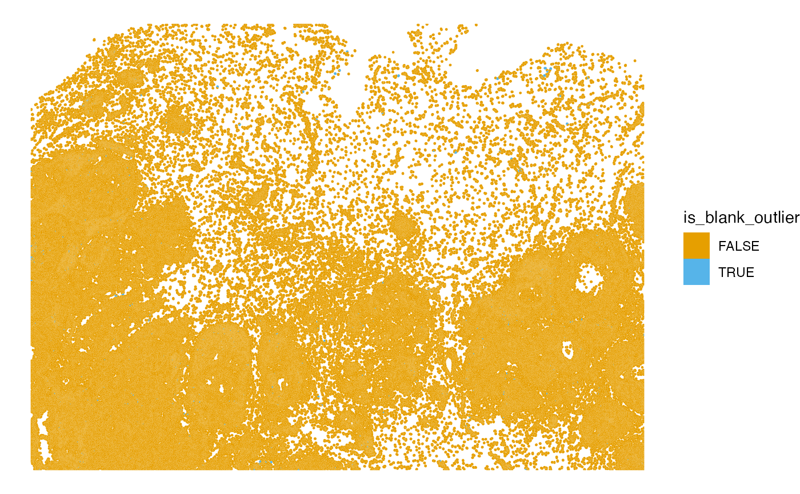
The analysis reveals that the outliers seem to be smaller. Outliers for negative probe controls and negative codeword controls are also hard to see on the plot, so their plots are skipped here. But the top left region in the tissue tends to have more counts from antisense controls.
plotSpatialFeature(sfe, "is_anti_outlier", colGeometryName = "cellSeg")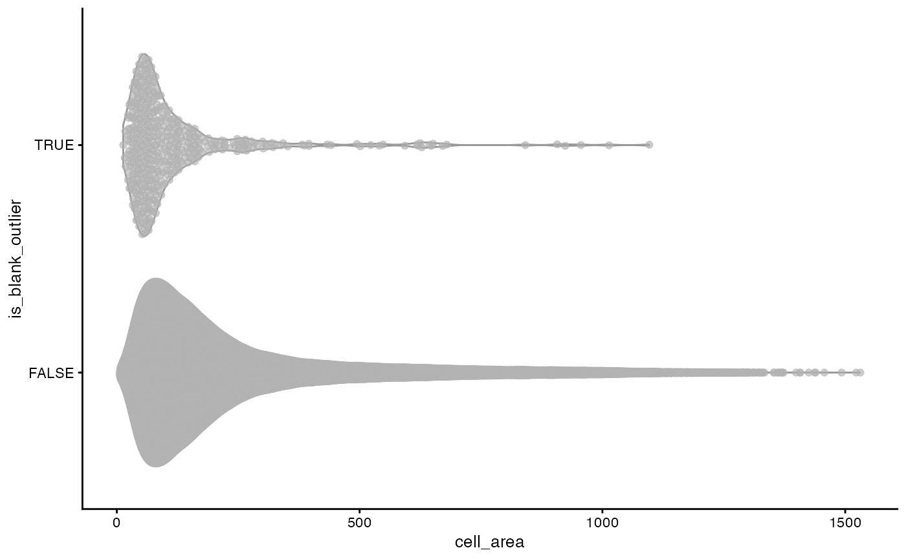
Now that we have identified the outliers, we can remove them along with empty cells before proceeding to further analysis:
inds_keep <- sfe$nCounts > 0 & sfe$nucleus_area < 400 & !sfe$is_anti_outlier &
!sfe$is_blank_outlier & !sfe$is_negCodeword_outlier & !sfe$is_negProbe_outlier
(sfe <- sfe[,inds_keep])
#> class: SpatialFeatureExperiment
#> dim: 541 117503
#> metadata(1): Samples
#> assays(1): counts
#> rownames(541): ABCC11 ACTA2 ... BLANK_0497 BLANK_0499
#> rowData names(6): ID Symbol ... vars cv2
#> colnames(117503): 1 2 ... 118707 118708
#> colData names(36): Sample Barcode ... is_anti_outlier
#> is_any_neg_outlier
#> reducedDimNames(0):
#> mainExpName: NULL
#> altExpNames(0):
#> spatialCoords names(2) : x_centroid y_centroid
#> imgData names(1): sample_id
#>
#> Geometries:
#> colGeometries: centroids (POINT), cellSeg (POLYGON), nucSeg (GEOMETRY)
#>
#> Graphs:
#> sample01:Over 1000 cells were removed.
Next we check how many negative control features are detected per cell:
plotColDataHistogram(sfe, cols_use2, bins = 20, ncol = 3) +
# Avoid decimal breaks on x axis unless there're too few breaks
scale_x_continuous(breaks = scales::breaks_extended(3, Q = c(1,2,5))) +
theme_bw()
There are at most 3 counts per cell per type. For the non-outliers, each type is at most around 1%, so this data looks good.
Genes
Here we look at the mean and variance of each gene
Real genes generally have higher mean expression across cells than negative controls.
rowData(sfe)$is_neg <- is_any_neg
plotRowData(sfe, x = "means", y = "is_neg") +
scale_y_log10() +
annotation_logticks(sides = "b")
Here the real genes and negative controls are plotted in different colors
plotRowDataBin2D(sfe, "means", "vars", subset = "is_neg",
name_true = "Counts (negative controls)",
name_false = "Counts (real genes)", bins = 50) +
geom_abline(slope = 1, intercept = 0, color = "red") +
scale_x_log10() + scale_y_log10() +
annotation_logticks() +
coord_equal() +
theme_bw()
The red line \(y = x\) is expected if the data follows a Poisson distribution. Negative controls and real genes form mostly separate clusters. Negative controls stick close to the line, while real genes are overdispersed. Unlike in the CosMX dataset, the negative controls don’t seem overdispersed.
Spatial autocorrelation of QC metrics
There’s a sparse and a dense region. This poses the question of what type of neighborhood graph to use, e.g. it is conceivable that cells in the sparse region should just be singletons. Furthermore, it is unclear what the length scale of their influence might be. It might depend on the cell type and how contact and secreted signals are used in the cell type, and length scale of the influence. If k nearest neighbors are used, then the neighbors in the dense region are much closer together than those in the sparse region. If distance based neighbors are used, then cells in the dense region will have more neighbors than cells in the sparse region, and the sparse region can break into multiple compartments if the distance cutoff is not long enough.
For the purpose of demonstration, we use k nearest neighbors with \(k = 5\), with inverse distance weighting. Note that using more neighbors leads to longer computation time of spatial autocorrelation metrics.
system.time(
colGraph(sfe, "knn5") <- findSpatialNeighbors(sfe, method = "knearneigh",
dist_type = "idw", k = 5,
style = "W")
)
#> user system elapsed
#> 131.465 1.295 134.405
sfe <- colDataMoransI(sfe, c("nCounts", "nGenes", "cell_area", "nucleus_area"),
colGraphName = "knn5")
colFeatureData(sfe)[c("nCounts", "nGenes", "cell_area", "nucleus_area"),]
#> DataFrame with 4 rows and 2 columns
#> moran_sample01 K_sample01
#> <numeric> <numeric>
#> nCounts 0.422387 5.55509
#> nGenes 0.401395 3.13694
#> cell_area 0.628837 7.57098
#> nucleus_area 0.377248 6.88331Global Moran’s I indicatse positive spatial autocorrelation. As the strength of spatial autocorrelation can vary spatially, we also run local Moran’s I.
sfe <- colDataUnivariate(sfe, type = "localmoran",
features = c("nCounts", "nGenes", "cell_area",
"nucleus_area"),
colGraphName = "knn5", BPPARAM = MulticoreParam(2))The pointsize argument adjusts the point size in
scattermore. The default is 0, meaning single pixels, but
since the cells in the sparse region are hard to see that way, we
increase pointsize. We would still plot the polygons in
larger single panel plots, but use scattermore in
multi-panel plots where the polygons in each panel are invisible anyway
due to the small size to save some time.
plotLocalResult(sfe, "localmoran",
features = c("nCounts", "nGenes", "cell_area", "nucleus_area"),
colGeometryName = "centroids", scattermore = TRUE,
divergent = TRUE, diverge_center = 0, pointsize = 1)
Interestingly, nCounts is more homogeneous in the interior of the dense region, while nGenes is more homogeneous by the edge of the dense region. As expected, cell area is more homogeneous in the sparse region. However, the nucleus area is more homogeneous in the interior of the dense region.
Moran plot for nCounts
sfe <- colDataUnivariate(sfe, "moran.plot", "nCounts", colGraphName = "knn5")
p1 <- moranPlot(sfe, "nCounts", binned = TRUE, plot_influential = FALSE)
p2 <- moranPlot(sfe, "nCounts", binned = TRUE)
p1 / p2 + plot_layout(guides = "collect") & theme_bw()
There are no obvious clusters here. In the lower panel, the 2D histogram of influential points is plotted in red.
Moran’s I
By default, for gene expression, the log normalized counts are used in spatial autocorrelation metrics, so before running Moran’s I, we normalize the data.
sfe <- logNormCounts(sfe)Use more cores if available to speed this up.
system.time(
sfe <- runMoransI(sfe, colGraphName = "knn5", BPPARAM = MulticoreParam(2))
)
#> user system elapsed
#> 101.459 8.262 58.473
rowData(sfe)$is_neg <- is_any_neg
plotRowData(sfe, x = "moran_sample01", y = "is_neg")
As expected, generally the negative controls are tightly clustered around 0, while the real genes have positive Moran’s I, which means there is generally no technical artifact spatial trend. No significantly negative Moran’s I is observed. Why is negative spatial autocorrelation so rare in gene expression?
What are the two negative controls with a sizable Moran’s I?
ord <- order(rowData(sfe)$moran_sample01[is_any_neg], decreasing = TRUE)[1:2]
top_neg <- rownames(sfe)[is_any_neg][ord]
plotSpatialFeature(sfe, top_neg, colGeometryName = "centroids",
scattermore = TRUE, pointsize = 1)
There is somewhat a spatial trend for that antisense probe, with more detected in the upper left. However, this might not significantly affect other results since there are at most 2 counts and at most about 1% of all counts in each cell. The negative control codeword has at most 1 count per cell and the cells with this negative control detected seem to be few and far between.
These are the most detected negative controls, and the most detected one is also the one with the highest Moran’s I among negative controls. However, the other negative control with higher Moran’s I is not among the most detected.
head(sort(rowData(sfe)$means[is_any_neg], decreasing = TRUE), 15)
#> antisense_PROKR2 antisense_SCRIB antisense_BCL2L15
#> 0.0192761036 0.0131741317 0.0066806805
#> antisense_TRMU antisense_MYLIP antisense_ULK3
#> 0.0042041480 0.0030807724 0.0028169494
#> BLANK_0485 antisense_ADCY4 antisense_LGI3
#> 0.0023403658 0.0019829281 0.0017871884
#> BLANK_0430 NegControlProbe_00035 NegControlProbe_00012
#> 0.0015063445 0.0010978443 0.0010382714
#> NegControlProbe_00033 NegControlProbe_00014 BLANK_0120
#> 0.0009446567 0.0009361463 0.0009276359What are the genes with the highest Moran’s I?
top_moran <- rownames(sfe)[order(rowData(sfe)$moran_sample01, decreasing = TRUE)[1:6]]
plotSpatialFeature(sfe, top_moran, colGeometryName = "centroids",
scattermore = TRUE, ncol = 2, pointsize = 0.5)
They all highlight the same histological regions, as in the CosMX vignette. How does Moran’s I relate to gene expression level?
plotRowData(sfe, x = "means", y = "moran_sample01")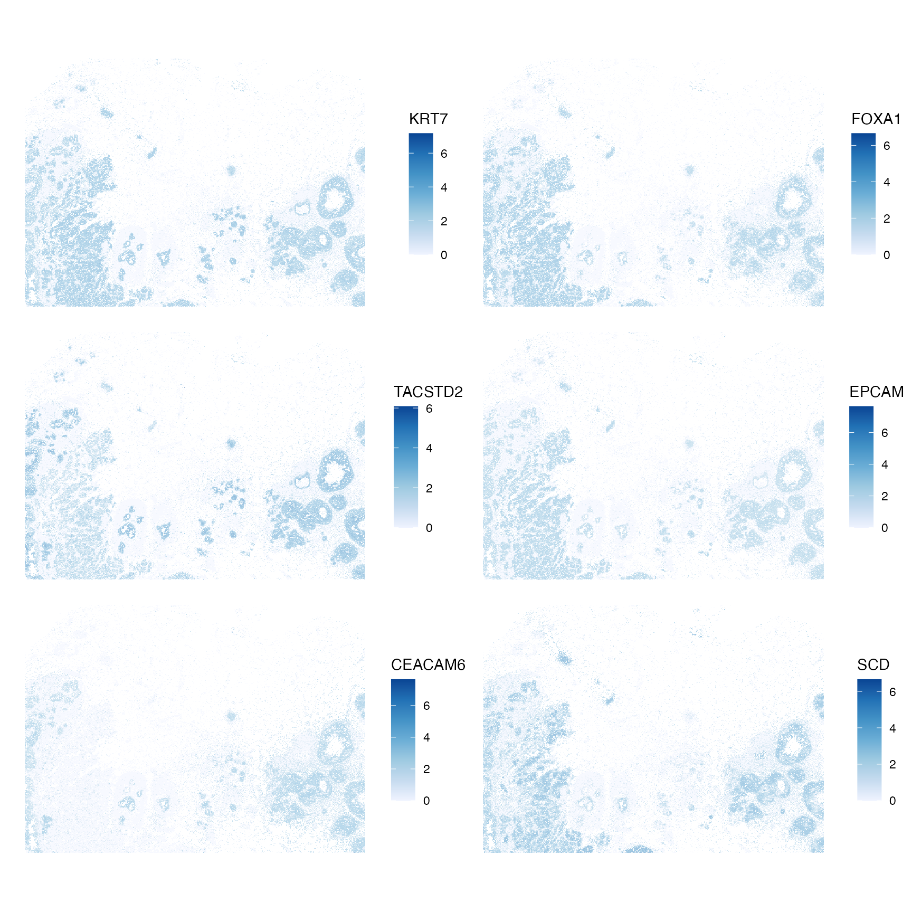
Very highly expressed genes have higher Moran’s I, but there are some less expressed genes with higher Moran’s I as well.
Non-spatial dimension reduction and clustering
Here we run non-spatial PCA as for scRNA-seq data
set.seed(29)
sfe <- runPCA(sfe, ncomponents = 30, scale = TRUE, BSPARAM = IrlbaParam())
plotDimLoadings(sfe, dims = 1:6) + theme_bw()
spatialReducedDim(sfe, "PCA", 6, colGeometryName = "centroids", divergent = TRUE,
diverge_center = 0, ncol = 2, scattermore = TRUE, pointsize = 0.5)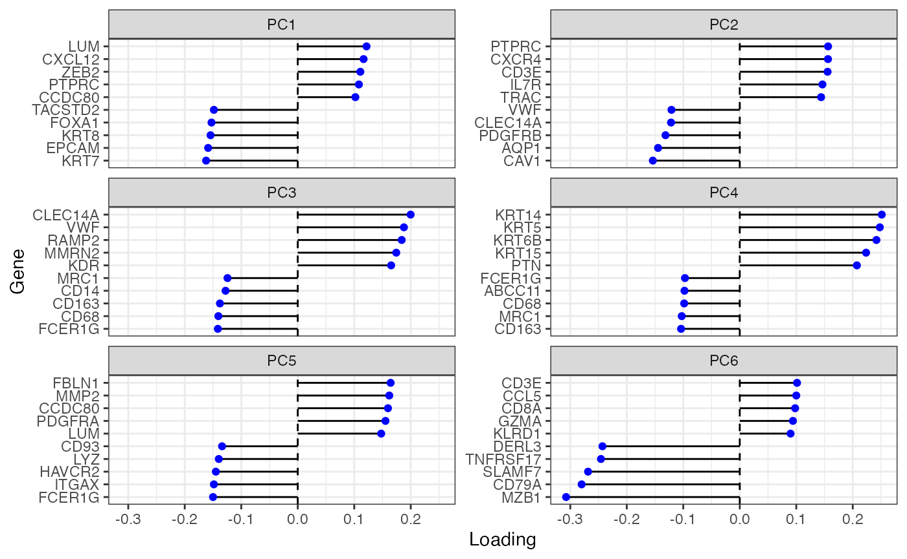
While spatial region is not explicitly used, the PC’s highlight spatial regions due to spatial autocorrelation in gene expression and histological regions with different cell types.
Non-spatial clustering and locating the clusters in space
colData(sfe)$cluster <- clusterRows(reducedDim(sfe, "PCA")[,1:15],
BLUSPARAM = SNNGraphParam(
cluster.fun = "leiden",
cluster.args = list(
resolution_parameter = 0.5,
objective_function = "modularity")))
#> Warning in (function (to_check, X, clust_centers, clust_info, dtype, nn, :
#> detected tied distances to neighbors, see ?'BiocNeighbors-ties'Now the scater can also rasterize the plots with lots of
points with the rasterise argument, but with a different
mechanism from scattermore that requires more system
dependencies.
plotPCA(sfe, ncomponents = 4, colour_by = "cluster", rasterise = FALSE)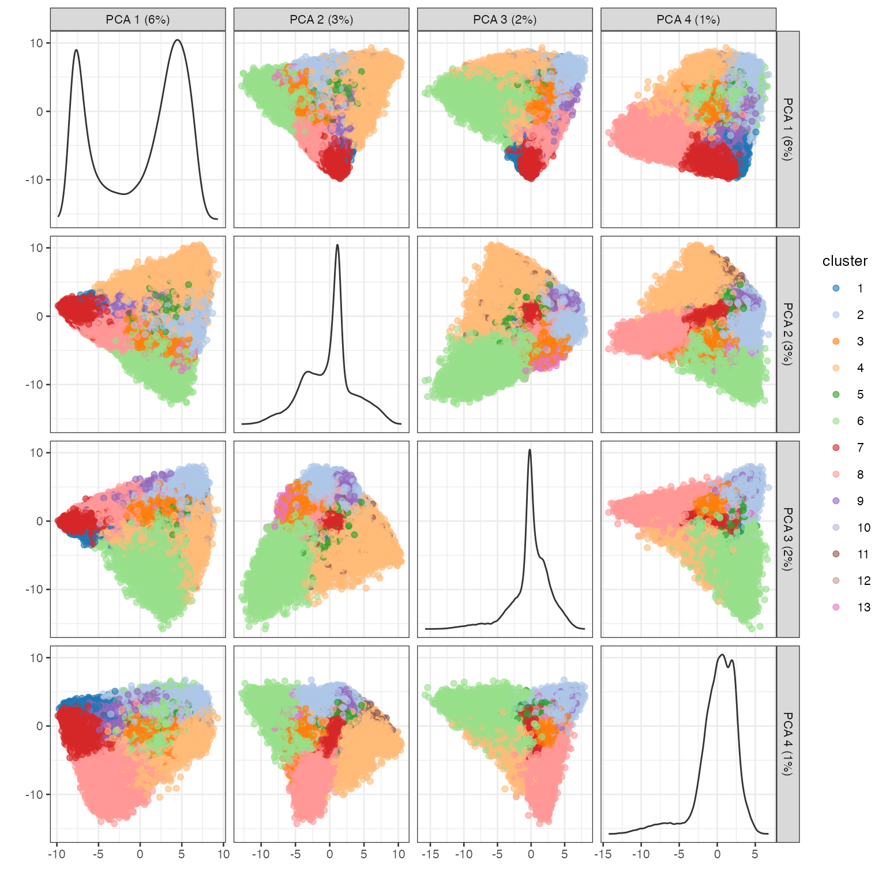
plotUMAP(sfe, colour_by = "cluster", rasterise = FALSE)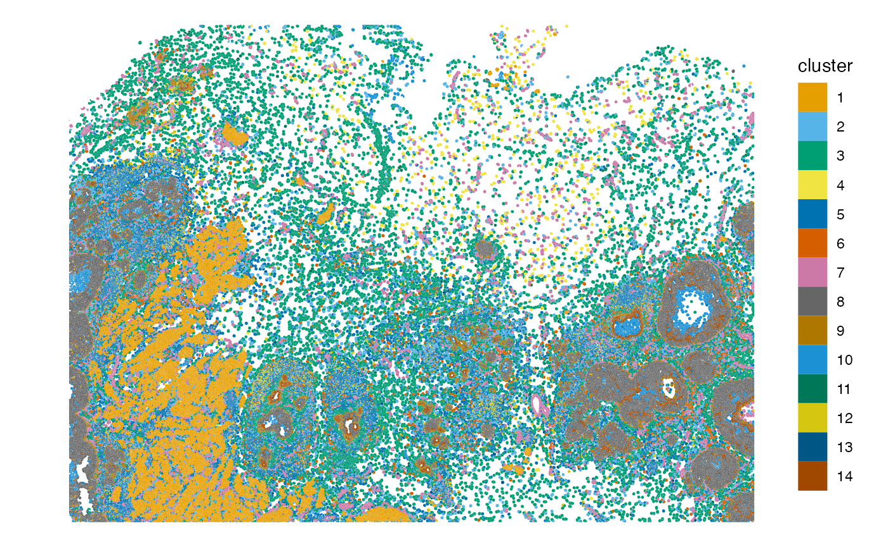
Plot the location of the clusters in space
plotSpatialFeature(sfe, "cluster", colGeometryName = "cellSeg")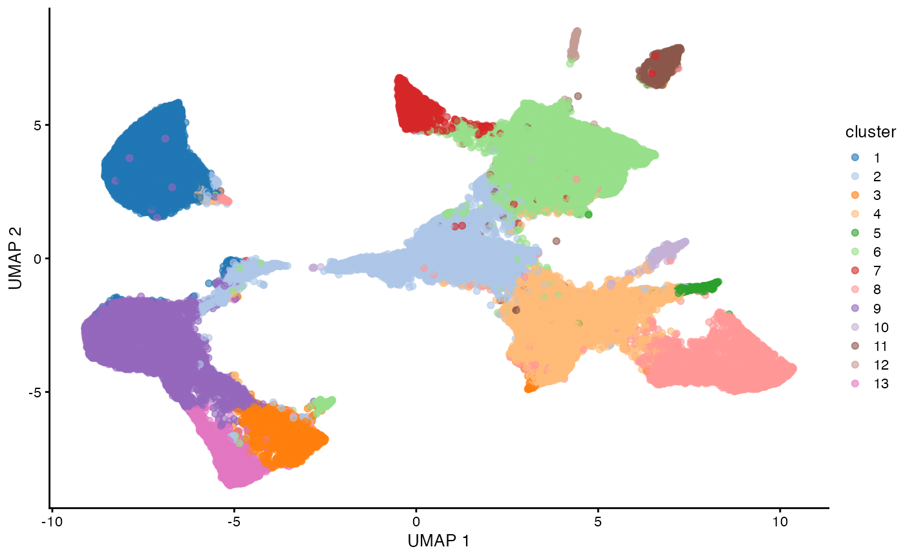
Differential expression
Cluster marker genes are found with Wilcoxon rank sum test as commonly done for scRNA-seq.
markers <- findMarkers(sfe, groups = colData(sfe)$cluster,
test.type = "wilcox", pval.type = "all", direction = "up")It’s already sorted by p-values:
markers[[6]]
#> DataFrame with 541 rows and 15 columns
#> p.value FDR summary.AUC AUC.1 AUC.2 AUC.3
#> <numeric> <numeric> <numeric> <numeric> <numeric> <numeric>
#> CD3E 1.08129e-172 5.84976e-170 0.834288 0.928724 0.899960 0.923141
#> TRAC 7.53686e-145 2.03872e-142 0.805752 0.926592 0.887797 0.918802
#> IL7R 5.33332e-136 9.61776e-134 0.796108 0.900779 0.853621 0.896071
#> CCL5 3.34091e-74 4.51858e-72 0.717197 0.770503 0.728465 0.763076
#> CD3D 7.56448e-51 8.18477e-49 0.678574 0.732699 0.712700 0.730421
#> ... ... ... ... ... ... ...
#> USP53 1 1 0.222654 0.222654 0.479578 0.434055
#> VWF 1 1 0.159973 0.518134 0.504303 0.538958
#> ZEB1 1 1 0.352678 0.600358 0.517118 0.514668
#> ZEB2 1 1 0.314895 0.736440 0.314895 0.645152
#> ZNF562 1 1 0.273830 0.273830 0.420054 0.388919
#> AUC.4 AUC.5 AUC.7 AUC.8 AUC.9 AUC.10 AUC.11
#> <numeric> <numeric> <numeric> <numeric> <numeric> <numeric> <numeric>
#> CD3E 0.910392 0.921113 0.879616 0.913567 0.929736 0.897792 0.835816
#> TRAC 0.892413 0.916267 0.862178 0.901142 0.928463 0.873201 0.782884
#> IL7R 0.873714 0.886957 0.838819 0.870514 0.902496 0.854189 0.786892
#> CCL5 0.731374 0.756452 0.720285 0.746292 0.772738 0.734768 0.699777
#> CD3D 0.714314 0.726523 0.700896 0.718518 0.733008 0.711401 0.680635
#> ... ... ... ... ... ... ... ...
#> USP53 0.408708 0.341343 0.468542 0.473662 0.293087 0.459260 0.519215
#> VWF 0.472873 0.434238 0.499472 0.159973 0.544675 0.436101 0.506998
#> ZEB1 0.352678 0.446303 0.478010 0.320867 0.618736 0.487657 0.508938
#> ZEB2 0.341763 0.330367 0.510486 0.300680 0.753614 0.327831 0.386492
#> ZNF562 0.452230 0.437512 0.474652 0.426815 0.281439 0.454937 0.498550
#> AUC.12 AUC.13
#> <numeric> <numeric>
#> CD3E 0.834288 0.927932
#> TRAC 0.805752 0.925837
#> IL7R 0.796108 0.901166
#> CCL5 0.717197 0.769366
#> CD3D 0.678574 0.730821
#> ... ... ...
#> USP53 0.511505 0.310949
#> VWF 0.506769 0.554152
#> ZEB1 0.515443 0.628981
#> ZEB2 0.277589 0.743554
#> ZNF562 0.518159 0.353732The code below extracts the significant markers for each cluster:
genes_use <- vapply(markers, function(x) rownames(x)[1], FUN.VALUE = character(1))
plotExpression(sfe, genes_use, x = "cluster", point_fun = function(...) list())
This allows for plotting more top marker genes in a heatmap:
genes_use2 <- unique(unlist(lapply(markers, function(x) rownames(x)[1:5])))
plotGroupedHeatmap(sfe, genes_use2, group = "cluster", colour = scales::viridis_pal()(100))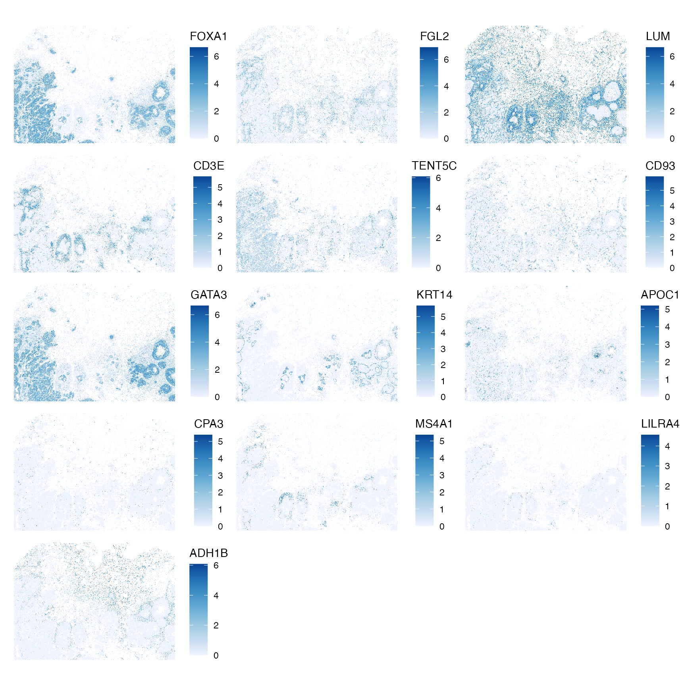
Local spatial statistics of marker genes
First we plot those genes in space as a reference
plotSpatialFeature(sfe, genes_use, colGeometryName = "centroids", ncol = 3,
pointsize = 0.3, scattermore = TRUE)
Global Moran’s I of these marker genes is shown below:
setNames(rowData(sfe)[genes_use, "moran_sample01"], genes_use)
#> FOXA1 FGL2 MYLK LUM LPL CD3E TENT5C CD93
#> 0.7421765 0.2604219 0.4653625 0.6812312 0.4549359 0.4015241 0.2806543 0.3250982
#> GATA3 CPA3 MS4A1 LILRA4 KRT15
#> 0.6558350 0.1904912 0.2144728 0.1092981 0.5425155All these marker genes have positive spatial autocorrelation, but some stronger than others.
Local Moran’s I of these marker genes is shown below:
sfe <- runUnivariate(sfe, "localmoran", features = genes_use, colGraphName = "knn5",
BPPARAM = MulticoreParam(2))
plotLocalResult(sfe, type = "localmoran", features = genes_use,
colGeometryName = "centroids", ncol = 3, divergent = TRUE,
diverge_center = 0, scattermore = TRUE, pointsize = 0.3)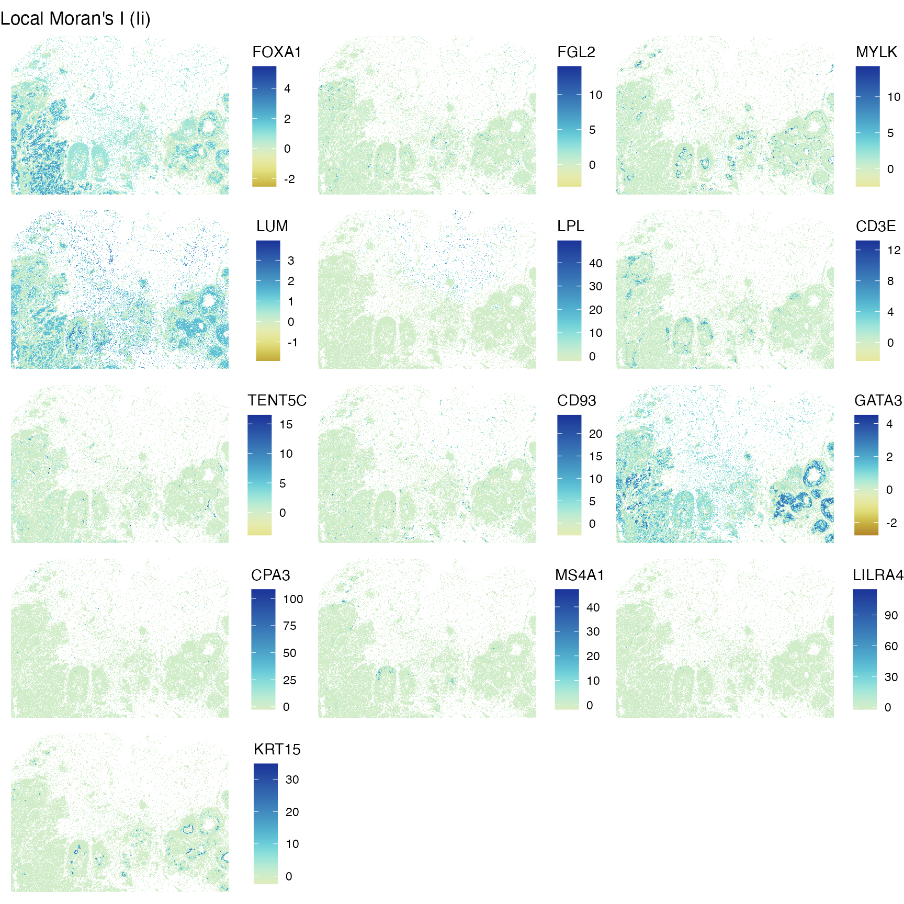
It seems that some histological regions tend to be more spatially homogenous in gene expression than others. The epithelial region tends to be more homogenous. For some genes, regions with higher expression also have higher local Moran’s I, such as FOXA1 and GATA3, while for some genes, this is not the case, such as FGL2 and LUM.
Finally, we assess local spatial heteroscdasticity (LOSH) for these marker genes to find local heterogeneity:
sfe <- runUnivariate(sfe, "LOSH", features = genes_use, colGraphName = "knn5",
BPPARAM = MulticoreParam(2))
plotLocalResult(sfe, type = "LOSH", features = genes_use,
colGeometryName = "centroids", ncol = 3, scattermore = TRUE,
pointsize = 0.3)
Again, just like in the CosMX dataset, LOSH is higher where the gene is more highly expressed in some (e.g. CD3E, LUM, TENT5C) but not all cases (e.g. FOXA1, GATA3). This may be due to spatial distribution of different cell types.
Session info
sessionInfo()
#> R version 4.2.2 (2022-10-31)
#> Platform: x86_64-apple-darwin17.0 (64-bit)
#> Running under: macOS Big Sur ... 10.16
#>
#> Matrix products: default
#> BLAS: /Library/Frameworks/R.framework/Versions/4.2/Resources/lib/libRblas.0.dylib
#> LAPACK: /Library/Frameworks/R.framework/Versions/4.2/Resources/lib/libRlapack.dylib
#>
#> locale:
#> [1] en_US.UTF-8/en_US.UTF-8/en_US.UTF-8/C/en_US.UTF-8/en_US.UTF-8
#>
#> attached base packages:
#> [1] stats4 stats graphics grDevices utils datasets methods
#> [8] base
#>
#> other attached packages:
#> [1] patchwork_1.1.2 scran_1.26.2
#> [3] bluster_1.8.0 BiocSingular_1.14.0
#> [5] BiocParallel_1.32.5 scater_1.27.5
#> [7] scuttle_1.8.4 stringr_1.5.0
#> [9] ggplot2_3.4.0 SpatialFeatureExperiment_1.0.3
#> [11] SpatialExperiment_1.8.0 SingleCellExperiment_1.20.0
#> [13] SummarizedExperiment_1.28.0 Biobase_2.58.0
#> [15] GenomicRanges_1.50.2 GenomeInfoDb_1.34.9
#> [17] IRanges_2.32.0 S4Vectors_0.36.1
#> [19] BiocGenerics_0.44.0 MatrixGenerics_1.10.0
#> [21] matrixStats_0.63.0 SFEData_1.0.2
#> [23] Voyager_1.0.8
#>
#> loaded via a namespace (and not attached):
#> [1] utf8_1.2.3 R.utils_2.12.2
#> [3] tidyselect_1.2.0 RSQLite_2.2.20
#> [5] AnnotationDbi_1.60.0 grid_4.2.2
#> [7] DropletUtils_1.18.1 munsell_0.5.0
#> [9] ScaledMatrix_1.6.0 codetools_0.2-19
#> [11] ragg_1.2.5 units_0.8-1
#> [13] statmod_1.5.0 withr_2.5.0
#> [15] colorspace_2.1-0 filelock_1.0.2
#> [17] highr_0.10 knitr_1.42
#> [19] wk_0.7.1 labeling_0.4.2
#> [21] GenomeInfoDbData_1.2.9 pheatmap_1.0.12
#> [23] bit64_4.0.5 farver_2.1.1
#> [25] rhdf5_2.42.0 rprojroot_2.0.3
#> [27] vctrs_0.5.2 generics_0.1.3
#> [29] xfun_0.37 BiocFileCache_2.6.0
#> [31] R6_2.5.1 ggbeeswarm_0.7.1
#> [33] rsvd_1.0.5 locfit_1.5-9.7
#> [35] bitops_1.0-7 rhdf5filters_1.10.0
#> [37] cachem_1.0.6 DelayedArray_0.24.0
#> [39] assertthat_0.2.1 promises_1.2.0.1
#> [41] scales_1.2.1 beeswarm_0.4.0
#> [43] gtable_0.3.1 beachmat_2.14.0
#> [45] rlang_1.0.6 systemfonts_1.0.4
#> [47] splines_4.2.2 scico_1.3.1
#> [49] BiocManager_1.30.19 s2_1.1.2
#> [51] yaml_2.3.7 httpuv_1.6.8
#> [53] tools_4.2.2 spData_2.2.1
#> [55] ellipsis_0.3.2 jquerylib_0.1.4
#> [57] RColorBrewer_1.1-3 proxy_0.4-27
#> [59] Rcpp_1.0.10 sparseMatrixStats_1.10.0
#> [61] zlibbioc_1.44.0 classInt_0.4-8
#> [63] purrr_1.0.1 RCurl_1.98-1.10
#> [65] dbscan_1.1-11 deldir_1.0-6
#> [67] viridis_0.6.2 cowplot_1.1.1
#> [69] ggrepel_0.9.3 cluster_2.1.4
#> [71] fs_1.6.1 magrittr_2.0.3
#> [73] magick_2.7.3 scattermore_0.8
#> [75] ggnewscale_0.4.8 mime_0.12
#> [77] evaluate_0.20 xtable_1.8-4
#> [79] gridExtra_2.3 compiler_4.2.2
#> [81] tibble_3.1.8 KernSmooth_2.23-20
#> [83] crayon_1.5.2 R.oo_1.25.0
#> [85] htmltools_0.5.4 mgcv_1.8-41
#> [87] later_1.3.0 spdep_1.2-7
#> [89] DBI_1.1.3 ExperimentHub_2.6.0
#> [91] dbplyr_2.3.0 rappdirs_0.3.3
#> [93] sf_1.0-9 boot_1.3-28.1
#> [95] Matrix_1.5-3 cli_3.6.0
#> [97] R.methodsS3_1.8.2 parallel_4.2.2
#> [99] metapod_1.6.0 igraph_1.3.5
#> [101] pkgconfig_2.0.3 pkgdown_2.0.7
#> [103] sp_1.6-0 vipor_0.4.5
#> [105] bslib_0.4.2 dqrng_0.3.0
#> [107] XVector_0.38.0 digest_0.6.31
#> [109] RcppAnnoy_0.0.20 Biostrings_2.66.0
#> [111] rmarkdown_2.20 uwot_0.1.14
#> [113] edgeR_3.40.2 DelayedMatrixStats_1.20.0
#> [115] curl_5.0.0 shiny_1.7.4
#> [117] rjson_0.2.21 lifecycle_1.0.3
#> [119] nlme_3.1-162 jsonlite_1.8.4
#> [121] Rhdf5lib_1.20.0 BiocNeighbors_1.16.0
#> [123] desc_1.4.2 viridisLite_0.4.1
#> [125] limma_3.54.1 fansi_1.0.4
#> [127] pillar_1.8.1 lattice_0.20-45
#> [129] KEGGREST_1.38.0 fastmap_1.1.0
#> [131] httr_1.4.4 interactiveDisplayBase_1.36.0
#> [133] glue_1.6.2 png_0.1-8
#> [135] BiocVersion_3.16.0 bit_4.0.5
#> [137] class_7.3-21 stringi_1.7.12
#> [139] sass_0.4.5 HDF5Array_1.26.0
#> [141] blob_1.2.3 textshaping_0.3.6
#> [143] AnnotationHub_3.6.0 memoise_2.0.1
#> [145] dplyr_1.1.0 irlba_2.3.5.1
#> [147] e1071_1.7-13